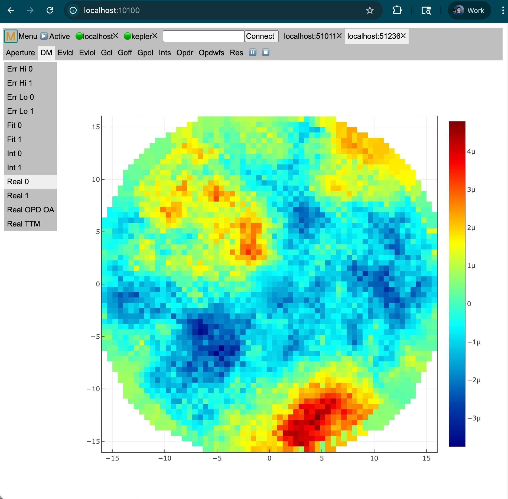
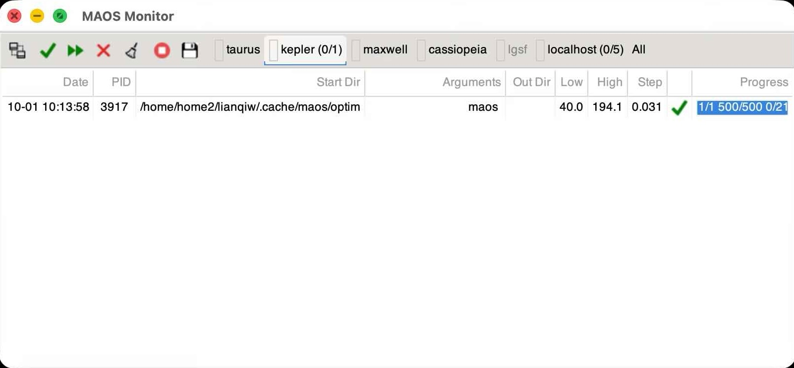
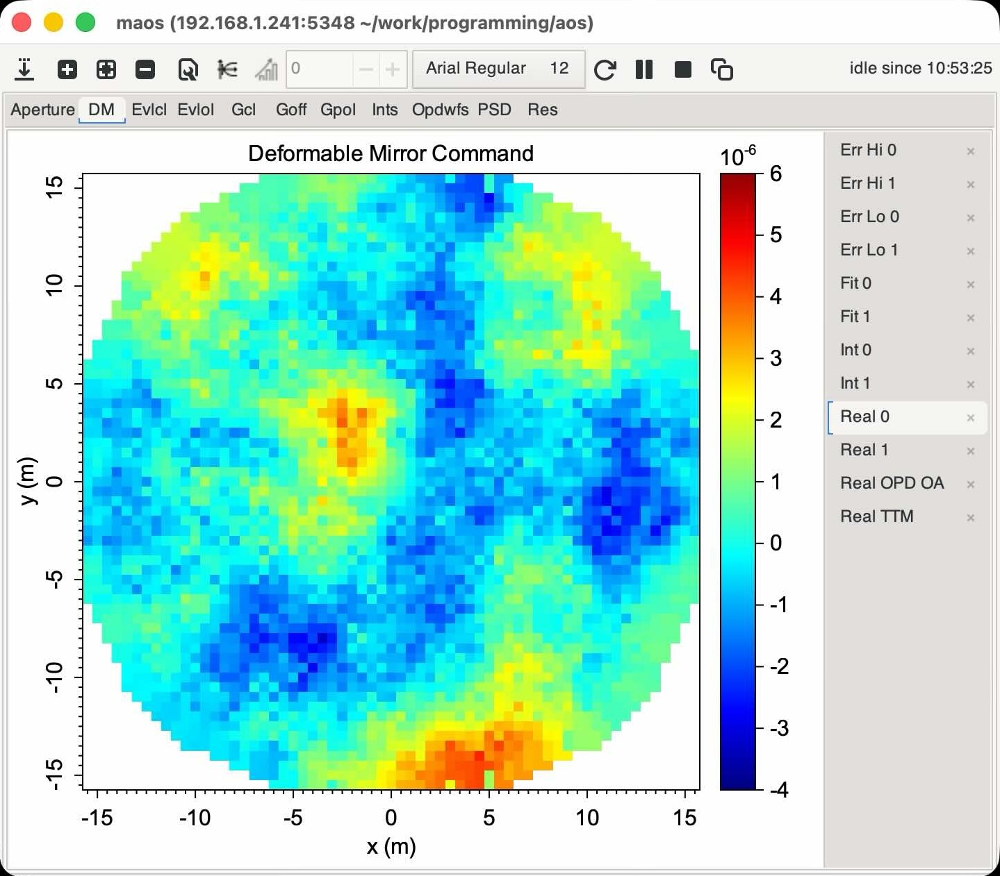

Quick start
git clone https://github.com/lianqiw/maos.git ~/work/maos/src
cd ~/work/maos/src && ./autogen.sh
mkdir ~/work/maos/optim && cd ~/work/maos/optim
../src/configure
make -j8
make check #optional: run the unit tests
bin/maos #run the default simulation (TMT NFIRAOS)
The sections below explain each step and the available options.
Prerequisites
MAOS runs on POSIX platforms: Linux and macOS are built and tested in continuous integration. Windows users can use WSL. The BSDs may work but are not tested.
Required:
- A C11 compiler with GNU extensions: GCC, Clang (including Apple Clang), or the Intel compilers (icx or the classic icc). A C++ compiler (g++ or clang++) can also be used, see C++ build.
- make, tar, bzip2, which, and curl or wget (used by configure to download missing libraries).
- Python 3. It is used during the build to generate the MATLAB interface source mex/aolib.c.
- When building from the git repository: autoconf, automake, and libtool.
- zlib, BLAS and LAPACK, FFTW 3, and CHOLMOD (SuiteSparse). configure downloads FFTW and CHOLMOD (and Intel MKL as BLAS/LAPACK on x86-64 Linux) when they are not found, see External libraries. zlib and BLAS/LAPACK should be installed from the system package manager.
Optional:
- CUDA toolkit 7.0 or later: GPU acceleration, see GPU acceleration.
- GTK 3 or GTK 4 (GTK 2 is still accepted) with cairo: the drawdaemon and monitor programs, see Graphical user interface. libnotify enables desktop notifications in monitor. On macOS, gtk-mac-integration is used if found.
- CMocka: unit tests. Downloaded if not found.
- MATLAB: the mex interface, see MATLAB mex interface.
- zstd (1.5 or later): reading and writing zstd compressed files.
- OpenSSL: HTTPS for the browser based monitor.
- libwebsockets: an additional websocket server, see Browser based monitor. Requires cmake when it has to be compiled from source.
- Doxygen: building this manual with make doc.
On Debian/Ubuntu, the libraries used in continuous integration are installed with
sudo apt-get install autoconf automake libtool make bzip2 zlib1g-dev \
libfftw3-dev libsuitesparse-dev libcmocka-dev libopenblas-openmp-dev
Add libgtk-3-dev (or libgtk-4-dev) for the graphical tools and nvidia-cuda-toolkit for GPU support. On Fedora/RHEL, use dnf with the corresponding -devel packages (e.g., fftw-devel, suitesparse-devel, openblas-devel). On macOS, use Homebrew (https://brew.sh/):
brew install autoconf automake libtool make fftw suite-sparse cmocka libomp gtk4 libwebsockets
If autoreconf is missing, autogen.sh offers to install the basic tools with apt, dnf, brew, or port.
Download the code
We recommend separate folders for 1) the source code, 2) the build (one folder per set of build options), and 3) running simulations. In this page $src_dir refers to the source folder.
Git (preferred)
The git repository is always up to date:
cd ~/work/maos
git clone https://github.com/lianqiw/maos.git src
cd src
./autogen.sh
export src_dir=$(pwd)
Run git pull to update. autogen.sh (which calls autoreconf -i) is needed after a fresh clone; afterwards make reruns the autotools by itself when configure.ac or a Makefile.am changes.
Tagged snapshot
A tagged version, for example v3.4:
cd ~/work/maos
curl -L https://github.com/lianqiw/maos/archive/refs/tags/v3.4.tar.gz -o maos-3.4.tar.gz
tar xf maos-3.4.tar.gz
cd maos-3.4
./autogen.sh
export src_dir=$(pwd)
Release tarball
Some releases include a source tarball that already contains configure, so the autotools are not needed. Do not modify configure.ac or Makefile.am in this case; that would trigger regeneration of configure and require the autotools.
cd ~/work/maos
curl -L https://github.com/lianqiw/maos/releases/download/v2.8/maos-2.8.0.tar.gz -o maos-2.8.0.tar.gz
tar xf maos-2.8.0.tar.gz
cd maos-2.8.0
export src_dir=$(pwd)
Pre-compiled binaries
Release v2.8 also provides pre-compiled binaries. They are older than the source code and do not include the job scheduler and monitor.
cd ~/work/maos
#choose one of the following:
curl -LO https://github.com/lianqiw/maos/releases/download/v2.8/maos_linux_amd64-2.8.0.tar.bz2 #Linux x86-64
curl -LO https://github.com/lianqiw/maos/releases/download/v2.8/maos_macos_amd64-2.8.0.tar.bz2 #macOS Intel
curl -LO https://github.com/lianqiw/maos/releases/download/v2.8/maos_macos_aarch64-2.8.0.tar.bz2 #macOS Apple silicon
tar xf maos_*.tar.bz2
Build
MAOS is always built out of tree, in a folder different from the source:
cd ~/work/maos
mkdir optim && cd optim
$src_dir/configure
make -j8
You can replace optim with any name, and keep several build folders side by side with different options, for example:
~/work/maos/src #source code
~/work/maos/optim #$src_dir/configure
~/work/maos/debug #$src_dir/configure --enable-debug
~/work/maos/release #$src_dir/configure --enable-release
~/work/maos/cpp #$src_dir/configure CC=clang++
At the end, configure prints a summary of the detected compiler, precision, OpenMP, CUDA, GTK, MATLAB, and Doxygen support. The details of all checks are in config.log.
The programs are placed in the bin subfolder of the build folder:
- maos: the simulator. See Run simulations.
- skyc: the sky coverage post-processor. See Sky Coverage.
- scheduler: the job scheduler and web server for the monitors. It is started automatically by maos (not built with --disable-scheduler or --enable-release).
- monitor and drawdaemon: the GTK job monitor and plotting program (only when GTK is found; monitor also needs the scheduler).
- drawres, drawbin: plot results or .bin files with drawdaemon.
- bin2fits, readbin, psfiris, psfgc, mvm_cpu, ethtest: utilities. load and record_cpu are built on Linux only.
- aolib.so: the lib routines as a shared library for Python, see Python scripts.
On macOS, application bundles drawdaemon.app and monitor.app are also created in bin. Running make inside bin rebuilds the whole build folder.
make install is not needed. Add the bin folder to PATH instead (e.g., in .bash_profile or .zshenv). The executables find the configuration files in the source folder ($src_dir/config), whose path is compiled in. If the source folder is moved, set MAOS_CONFIG_PATH to the folder that contains config (see Run simulations). The browser monitor also serves its files from $src_dir/tools, so keep the source folder in place.
Configure options
Options are passed to configure. The most useful ones are:
| Option | Default | Effect |
| --enable-debug | off | Compile with -g3 -O0 and enable debug checks. The default is -g -O3 -mtune=native. |
| --enable-gcov | off | Code coverage with gcov (implies --enable-debug). make check then produces an lcov report if lcov is installed. |
| --enable-release | off | Build for compatibility: disables the scheduler (hence monitor and the browser monitor). On macOS, targets macOS 11.0 or later. |
| --disable-scheduler | enabled | Do not build the job scheduler and monitor. Useful on clusters with their own job management. |
| --disable-double (or --enable-single) | double | Use single precision on both CPU and GPU. See Single precision. |
| --disable-openmp | enabled if found | Do not use OpenMP; only POSIX threads are used. |
| --enable-openmp | | On macOS, download or compile libomp if it is not found. |
| --disable-threadlib | threaded | Use the serial versions of FFTW, MKL and OpenBLAS. |
| --enable-mkl | off | On x86-64 Linux, prefer Intel MKL for BLAS/LAPACK and download it if not installed. |
| --disable-dlong | long if available | Do not use the long integer (cholmod_l_*) CHOLMOD interface. |
| --disable-binary | enabled | Compile missing libraries from source instead of downloading pre-compiled ones. |
| --disable-download | enabled | Do not download anything. Missing required libraries cause an error. |
| --with-cuda[=DIR] / --without-cuda | auto | CUDA toolkit location, or disable CUDA. See GPU acceleration. |
| --with-ccbin=CC | $CC | Host compiler passed to nvcc -ccbin. |
| --enable-cuda-double | off | Use double precision on the GPU. |
| --enable-nvcc | off | Use nvcc for the CUDA code even when CC is clang. |
| --with-matlab[=DIR] / --without-matlab | auto | MATLAB location for the mex interface, or disable it. See MATLAB mex interface. |
| --disable-gtk-3, --disable-gtk-4, --enable-gtk-4 | GTK 3 | Select the GTK version. See Graphical user interface. |
| --enable-cmocka / --disable-cmocka | enabled | Unit tests with CMocka. |
| --disable-zstd | enabled if found | Do not use zstd compression. |
| --enable-libwebsockets | off | Also serve the browser monitor with libwebsockets. |
| --with-openssl=DIR | auto | OpenSSL location (HTTPS for the browser monitor). |
| --enable-doxygen | off | Download doxygen (and a TeX distribution) if not installed, for make doc. |
| --prefix=DIR | ~/.aos | Where downloaded and compiled libraries are installed. |
Run $src_dir/configure --help for the complete list. To change options, it is simplest to configure again in a new, empty build folder.
Compilers
The default compiler of the system is used. Select another one with CC:
$src_dir/configure CC=clang #clang. Also compiles the CUDA code, see below.
$src_dir/configure CC=icx #Intel oneAPI compiler
$src_dir/configure CC=gcc-14 #a specific gcc version
The environment variable MAOS_CC is used as the compiler when CC is not set. configure recognizes GCC, Clang, and the Intel compilers from the output of $CC --version, and stops with Compiler ... is unknown for other compilers.
C++ build
The C code can also be compiled as C++, which is tested in continuous integration on macOS:
$src_dir/configure CC=clang++ #or CC=g++
C++ mode is enabled when CC (or CFLAGS) contains ++. New code must compile in both modes.
Single precision
By default the CPU code uses double precision and the GPU code uses single precision. --disable-double (or --enable-single) switches the CPU code to single precision too, which reduces memory usage and run time. It requires the single precision FFTW library (fftw3f) and disables the MATLAB mex interface. --enable-cuda-double switches the GPU code to double precision; it cannot be combined with single precision CPU code. The precision in use is printed at startup of maos, e.g., CPU(F64,+O3) with CUDA(v120,F32).
External libraries
For FFTW, CHOLMOD, CMocka, and libwebsockets (when enabled), configure tries in turn:
- The library already installed in the system (found by pkg-config or the default search paths).
- A pre-compiled library downloaded from https://github.com/lianqiw/files (skipped with --disable-binary).
- Compiling the library from the source downloaded from the same place.
For BLAS/LAPACK, it tries MKL (x86-64 Linux only), then the generic -llapack -lblas (which on macOS is the Accelerate framework), then OpenBLAS (threaded first), and on x86-64 Linux downloads MKL as the last resort (or first with --enable-mkl). zlib is compiled from source if missing.
The downloads are kept in external/downloads of the build folder. Libraries are installed into the prefix (default ~/.aos): headers in ~/.aos/include and libraries in ~/.aos/lib64 (lib<suffix> in general, depending on the platform). This location is added to the run path of the executables, so do not delete it. Compilation logs are in external/compile.log and external/compile_NAME.log. make clean removes the external folder.
GPU acceleration
Install the Nvidia driver and the CUDA toolkit, and check with nvidia-smi that all GPUs are listed. configure enables CUDA automatically when nvcc is in PATH or in /usr/local/cuda/bin. For other locations, pass the CUDA folder (the one that contains bin/nvcc):
$src_dir/configure --with-cuda=$cuda_dir
$src_dir/configure --with-cuda=/usr --with-ccbin=gcc-12 #as in CI: Ubuntu's CUDA 12.0 supports gcc up to 12
$src_dir/configure --without-cuda #disable CUDA
Notes:
- CUDA toolkit 7.0 or later is required.
- The code is compiled for a single GPU architecture: the lowest compute capability reported by nvidia-smi, limited to the newest one supported by the toolkit. When nvidia-smi is not available (e.g., on a build machine without GPU), the oldest architecture supported by the toolkit is used (compute capability 5.0 for CUDA 12, 7.5 for CUDA 13). configure stops if the GPU is older than what the toolkit supports.
- When CC is clang, clang compiles the CUDA code instead of nvcc. Use --enable-nvcc to use nvcc anyway. With nvcc, the host compiler is $CC, or the one given by --with-ccbin. Use the latter when CC is newer than what nvcc supports.
- The GPU code uses single precision unless --enable-cuda-double is given.
When maos is compiled with CUDA and Nvidia GPUs are available, it uses all suitable GPUs. GPUs are selected at run time with -g or -G:
maos -g-1 #do not use GPU
maos -g0 -g2 #only use GPU 0 and 2
maos -G2 #automatically choose 2 GPUs
MATLAB mex interface
The mex routines are built automatically when MATLAB is found: either matlab is in PATH, or MATLAB is installed in /Applications/MATLAB*.app, ~/Applications/MATLAB*.app, /opt/MATLAB/*, or /usr/local/share/MATLAB/*. Otherwise, pass the MATLAB folder:
$src_dir/configure --with-matlab=$matlab_dir #folder containing bin/mex
$src_dir/configure --without-matlab #disable mex
The mex interface is not available with single precision, or when the MATLAB architecture does not match the build. The compiled routines are in the mex folder of the build folder:
- read() and write() read and write .bin and .fits files.
- aolib() exports many lib routines to MATLAB. Run aolib() to see the list of available functions. Its source mex/aolib.c is generated by scripts/lib2mex.py from the headers.
- maos() runs maos within MATLAB. Run maos() to see the instructions.
The scripts folder also contains readbin.m and writebin.m, pure MATLAB routines for .bin files that need no compilation.
Unit tests and documentation
When CMocka is available (it is downloaded if needed), the unit tests in test/cmocka_*.c are built and run with
make check #all unit tests
make -C test check TESTS=cmocka_mat #a single test
The results are summarized in docs/unittest_status.md of the build folder (see Unit Test Status). With --enable-gcov, make check also generates a line coverage report in test/coverage if lcov is installed.
The end-to-end regression test runs a set of short simulations and compares the wavefront errors against reference values:
cd bin
$src_dir/scripts/maos_check.sh 5 #5 m telescope. Also 10 or 30.
$src_dir/scripts/maos_check.sh 5 -g-1 #force CPU
When doxygen is found (or --enable-doxygen is used), make doc runs the unit tests and builds this manual into doxygen-doc/html of the build folder.
Continuous integration
The GitHub workflows in .github/workflows build MAOS on every push:
- Linux (Ubuntu): GCC with --enable-release and CUDA (Ubuntu's toolkit with --with-ccbin=gcc-12), then make check, make doc, and maos_check.sh 5 (on CPU, as the runners have no GPU). Then Clang with --enable-release --without-cuda and make check.
- macOS: Apple Clang with --enable-release --disable-binary, then make check.
- macOS in C++ mode: CC=clang++ --disable-binary, then make check.
Troubleshooting
- Look at the summary at the end of the configure output and at config.log to see which libraries were found.
- Please install zlib, Please install blas/lapack: install them with the package manager. MKL is downloaded automatically only on x86-64 Linux.
- FFTW library is not found, CHOLMOD library is not found: the download or compilation failed. Check the network access (curl or wget is needed) and the logs in external/, or install the libraries from the package manager (libfftw3-dev, libsuitesparse-dev).
- Require at least CUDA toolkit 7.0: upgrade CUDA or use --without-cuda.
- CUDA version supports compute capability X - Y, but device is at Z: the GPU is too old for the installed CUDA toolkit. Use an older toolkit or --without-cuda.
- nvcc fails with an unsupported host compiler: pass a supported one with --with-ccbin.
- mex not found at ...: pass --with-matlab=DIR or --without-matlab.
- No OpenMP on macOS: Apple Clang needs libomp (e.g., brew install
libomp), or use --enable-openmp to download it.
- monitor or scheduler missing: they are not built with --enable-release or --disable-scheduler; monitor also needs GTK.
- Executables fail to find shared libraries after ~/.aos (or the --prefix folder) was removed: configure and build again.
Browser based monitor
The scheduler, which is started automatically by maos, includes a web server that serves a browser interface to manage maos jobs and plot their data in real time. maos prints its address at startup, for example http://localhost:10123. A tutorial is available on YouTube.
- The port is the number in ~/.aos/port. If that file does not exist, the port is computed from the user name (between 10000 and 12287).
- The page is protected with HTTP basic authentication. The user name is your login name and the password is the first line of ~/.aos/htpasswd, which is created with a random password on the first connection.
- The same password authenticates every TCP connection to the scheduler: monitor and drawdaemon connecting to a host, maos launching jobs on another host, and scripts/maos_client.py. The password is not sent over the network; the client answers a random challenge with it. When the home folder is not shared between hosts, copy ~/.aos/htpasswd from the host that runs the scheduler (keep it readable only by you). Connections within the same host through the unix socket are not authenticated.
- When OpenSSL was found at configure time and a certificate and key exist in ~/.aos/HOSTNAME.crt and ~/.aos/HOSTNAME.key (or ~/.aos/Server.crt and ~/.aos/Server.key), the same port also accepts HTTPS.
- With --enable-libwebsockets, libwebsockets serves the same interface on port number + 100.
- The page files (monitor.html, monitor.js, ...) are read from $src_dir/tools.

Graphical user interface
When GTK is found, monitor and drawdaemon are built in bin. drawdaemon also needs cairo. By default GTK 3 is preferred, then GTK 4, then GTK 2. To select a version when several are installed:
$src_dir/configure --enable-gtk-4 #prefer gtk4
$src_dir/configure --disable-gtk-3 #do not use gtk3
$src_dir/configure --disable-gtk-4 #do not use gtk4
On macOS, install GTK with Homebrew (or MacPorts), together with gtk-mac-integration for GTK 3. For a manual installation, follow https://www.gtk.org/docs/installations/ and make sure pkg-config is in PATH and finds GTK. Then rerun configure and make.
- drawdaemon plots data sent by maos, drawres, or drawbin. It is launched automatically when plotting is requested.
- monitor monitors jobs on this and other machines.
- drawres plots the results in result folders.
- drawbin plots OPDs or maps stored in .bin files (drawbin loc.bin
opd.bin or drawbin map.bin).
Monitor
To monitor jobs on several machines, create the following files in the .aos folder of your home folder on all the machines:
- ~/.aos/hosts: one machine per line, as hostname or shortname=hostname:port. Lines starting with # are ignored.
- ~/.aos/port: the port that the scheduler listens on, so that the monitor can connect to it. Any non-privileged port (e.g., 10000) works, but different users on the same machine need different ports. The port must be the same on all machines unless it is given in hosts. If this file does not exist, the port is computed from the user name. Make sure the firewall allows it.
After changing these files, kill the running scheduler; maos starts a new one when it runs. The GTK monitor connection itself is not authenticated, so protect the port (e.g., with a firewall) on shared networks.

Drawdaemon
The monitor lists the jobs on each connected host. Select a running job and choose Plot from the right click menu to launch drawdaemon and plot the telemetry data in real time. This works for local and remote hosts. Several drawdaemon windows can be opened for the same or different jobs.
drawdaemon is also launched when plotting is enabled on the maos command line with plot.setup=1, plot.run=1, or plot.all=1.
Remote plotting: when maos, drawres, or drawbin runs on a remote or headless machine without a display, a running monitor connected to that machine opens drawdaemon on the local computer.

Plotting results
drawres result_folder ... plots the results in one or more folders. Wildcards are supported to match many folders, and -s seed selects seeds. Without a display, it plots through a monitor as described above, so results can be viewed remotely.
Python scripts
The scripts folder contains Python routines. Add it to the module search path, e.g., export PYTHONPATH=$src_dir/scripts. They need numpy and scipy; draw.py also needs matplotlib.
- readbin.py: readbin(filename) reads .bin and .fits files (also gzip compressed).
- maos_result.py: maos_res() and related functions read and average the wavefront error results in result folders (see Simulation Results).
- draw.py: draw(loc, opd) plots an OPD defined on coordinates loc; draw(map) plots a 2-d array.
- libaos.py: wraps the lib routines in bin/aolib.so with ctypes (through interface.py). It includes read() and write() for .bin and .fits files. Set the environment variable MAOS_AOLIB to the full path of aolib.so, e.g., export MAOS_AOLIB=~/work/maos/optim/bin/aolib.so.
- lib2py.py regenerates libaos.py from the headers (lib/*.h and a few others). Run it after changing function declarations in those headers. Similarly, lib2mex.py generates the MATLAB aolib mex source.
- maos_client.py: an interface to a running maos. See below.
Readers for other languages are also provided: readbin.m (MATLAB), readbin.pro (IDL), and readbin.jl (Julia).
Interface to a running maos
The data of a running maos can be retrieved, and the simulation paused, from Python:
import maos_client
maos_client.connect(host, pid_=pid) # scheduler host and the PID of the maos job
maos_client.get_list() # list of available variables
maos_client.get_var(name) # get the variable with this name, e.g., simu.gradcl
maos_client.get_all() # get all variables
maos_client.pause(1) # pause or step maos
maos_client.pause(0) # resume maos
The connection goes through the scheduler, which hands it to the maos process with that PID. The port defaults to the scheduler port: the number in ~/.aos/port, or else a number derived from the user name, as in maos. Pass port_ to connect() to override it.